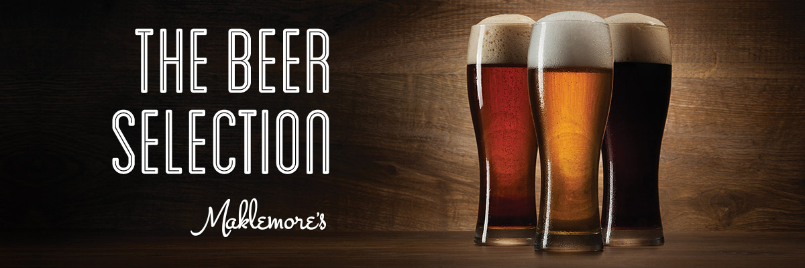
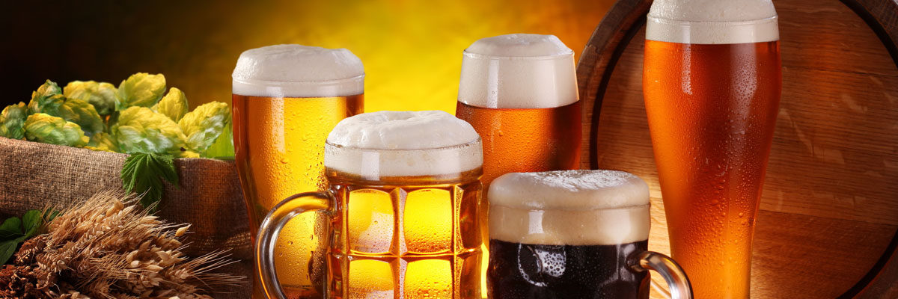

Origenes de la CervezaEs importante destacar que las variaciones de la cerveza son innumerables debido a su elaboracion, componentes, mecanismos, la fermentacion, el agua, entre otros. No obstante, sus origenes o sus tipos se dividen en 2 grandes familias segun la temperatura de fermentacion de los mostos: Alta Fermentacion y Baja Fermentacion. Por cada familia existen subtipos por origen o mecanismos de elaboracion. |
||
Baja Fermentacion |
||
Alta Fermentacion |
||